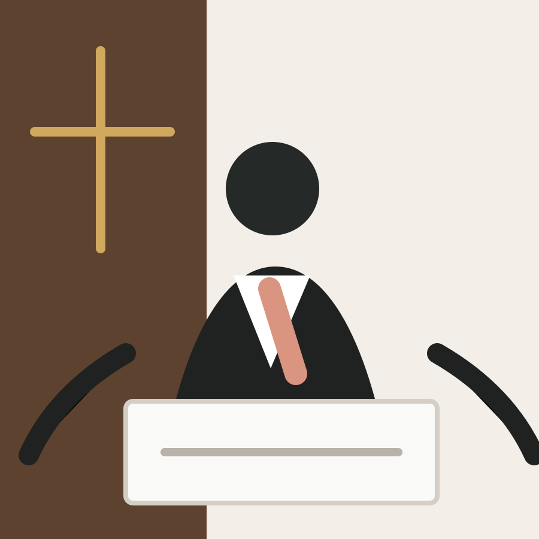

주일예배
주일 오전 11:00
온 세대가 함께 말씀과 찬양으로 하나님께 나아갑니다.기독교 한국 침례회 소속
열방과 민족을 품은 예수 제자 공동체
함께 예배하고, 말씀 안에서 자라며, 삶의 자리로 복음을 흘려보내는 공동체입니다.
About
열민 침례교회는 1998년 대전광역시 서구 둔산동에서 개척한 이후 2002년부터는 대전 유성구 장대동의 현재 위치에서 예배와 양육, 다음 세대 사역을 이어가고 있습니다.
이름처럼 열방과 민족을 품고, 예수님의 제자로 살아가는 공동체를 지향합니다. 함께 예배하며 한 사람을 소중히 여기는 교회를 꿈꿉니다.
Worship
정확한 시간은 교회 확인 후 업데이트해주세요.
주일 오전 11:00
온 세대가 함께 말씀과 찬양으로 하나님께 나아갑니다.주일 오전 11:00
어린이의 눈높이에 맞춘 말씀과 돌봄이 있는 예배입니다.시간 추후 업데이트
말씀을 배우고 삶을 나누는 소그룹 모임을 준비합니다.Sermon
주일 설교와 예배의 흐름을 영상으로 나누며, 교회 밖의 자리에서도 말씀을 이어갑니다.
예배당에서 선포되는 말씀을 유튜브 영상으로도 나누고 있습니다. 처음 방문하기 전에도 설교를 통해 열민교회의 신앙 고백과 예배 분위기를 자연스럽게 만날 수 있습니다.
유튜브에서 보기Mission
열민교회는 이름처럼 열방과 민족을 마음에 품고 국내와 해외 선교에 힘을 쏟고 있습니다. 가까운 이웃을 섬기는 일부터 먼 곳의 복음 사역을 함께 세우는 일까지, 작은 공동체가 감당할 수 있는 순종을 꾸준히 이어갑니다.
Ministers

1998년 열민 침례교회를 개척하고 지금까지 공동체를 섬기고 있습니다. 목회와 더불어 신앙서적 출간 사역도 이어가고 있습니다.
다음 세대가 말씀 안에서 자라고 교회 안에서 안전하게 사랑받도록 어린이부 예배와 양육을 섬깁니다.
담임목사 박석환 목사는 묵상과 편지, 시와 에세이의 언어로 신앙의 길을 전합니다. 책마다 일상의 자리에서 말씀을 붙들고, 질문하는 마음이 집으로 돌아오도록 돕는 따뜻한 초대가 담겨 있습니다.
Visit
유성IC에서 차로 약 3분 거리입니다. 처음 오시는 분도 편안히 방문하실 수 있습니다.
유성대로783번길